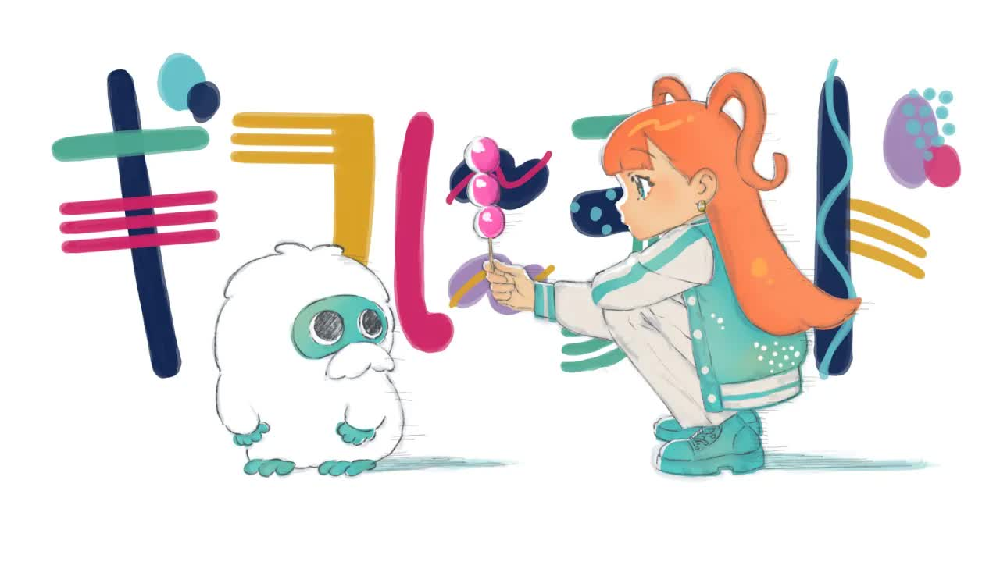

Toggle navigation
Menu
Home
2024 春
Rin's Music Playlist
2024 4月新番及相關歌曲

The Irregular at Magic High School Season 3 - Opening Full | "Shouted Serenade" by LiSA
LiSA
Your browser does not support the audio element.
1